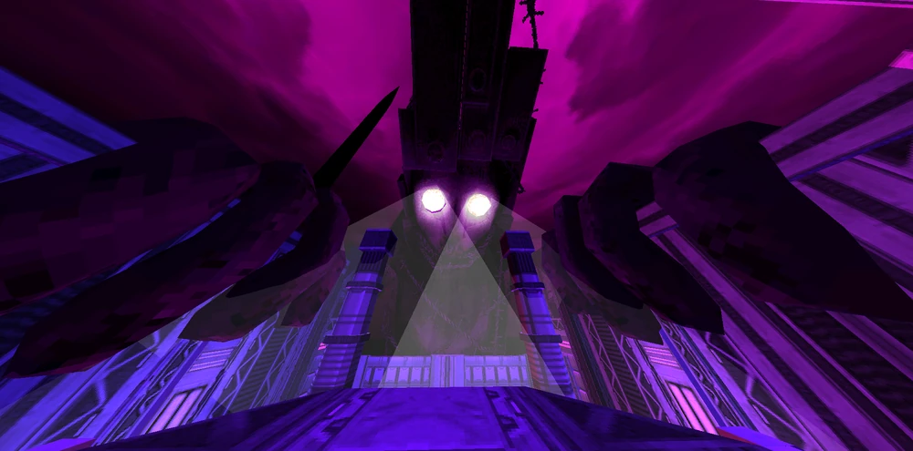

The Corpse of King Minos is a colossal humanoid figure, wrapped in barbed wire from head to toe. The wire is most visible around his crown and mouth, where it haphazardly keeps the massive metal bars attached to his head, back, and legs. His glowing stark-white eyes project beams of light, adding to the terrifying presence of this imposing figure. Despite being a dead entity, Minos' size and grotesque design make him a formidable opponent.
The Corpse of King Minos may be slow and predictable in his attacks, but he serves as a test of your situational awareness and ability to traverse a large arena. The battle is divided into phases, and Minos will evolve as you chip away at his health, making the fight progressively more challenging. Stay aware of the changes in his attack pattern and the state of the arena to prevail.
Before the main encounter with Minos, you’ll face his giant hand, which slams into the walls or the ground, creating shockwaves that are easily avoidable. The hand has three phases:
During each phase, the hand's speed will increase, so keep on your toes and avoid getting caught by its shockwaves.
In the first phase, Minos' corpse throws slow, parryable punches at V1. After a while, Minos will summon a Black Hole that moves slowly toward V1. The Black Hole deals 10 damage and 99 hard damage if it hits, leaving V1 at 1 HP and preventing healing for several seconds. You must dodge the Black Hole as it approaches, or else you'll be left vulnerable for a period of time. The Black Hole persists until the second phase or until it hits the player, so it’s critical to constantly avoid it.
In phase two, Minos' skeletal serpentine eyes reveal themselves. These eyes begin to fire projectiles at the player, either launching a large Homing Orb or a volley of Hell Orbs, the latter mimicking the sound of a Soldier preparing a volley attack. The projectiles are highly dangerous, and you must remain vigilant to avoid them.
Once Minos reaches half health, he will stop summoning Black Holes. However, if any Black Holes exist, they will persist unless you're on Violent or higher difficulty. The skeletal serpents will continue to fire either Homing Orbs or Hell Orbs. Be prepared to dodge and parry these projectiles while continuing to deal damage to Minos.
The behavior of Minos' corpse changes depending on the difficulty level:
The Corpse of King Minos is an enormous target, so any weapon will land hits easily. The Shotgun and Nailgun are particularly effective during the hand phase, and Shotgun Swapping is highly effective at dealing constant damage. The Overheat Nailgun and the Electric and Screwdriver Railcannon variants are also great choices for heavy damage. Minos takes 500% more damage from Feedbacker parries, making parrying his melee attacks an excellent way to quickly deplete his health.
While Shotgun Parries are effective, they require extremely precise timing, and they are not advised for beginners. Targeting Minos' hands is a smart move when a clear shot on his body isn't possible, as it can allow for easier healing. The projectiles shot by the serpents can also be parried with good timing to avoid damage and continue dealing with Minos effectively.
A special tactic involves standing below one of Minos’ hands, jumping up, and tossing 4 Marksman Revolver coins directly into his hand before shooting at them with an Electric Railcannon. If you hit the coins while they’re all in Minos’ hand, you can deal over a quarter of his health in damage.
Additionally, precise timing and accuracy can allow you to shoot the parasites' projectiles, creating an explosion that damages Minos and yields a [+INTERRUPTION] style bonus. However, be aware that this does not prevent the projectile from being launched at you.